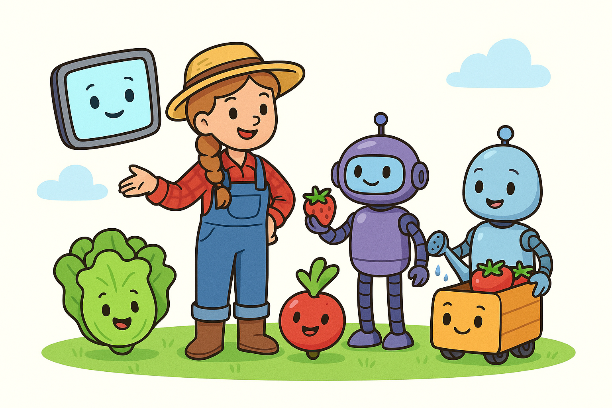

A Bite of Future
SmAIle Project
Resources & Downloads
Download the PDF versions of this scenario or the associated attachments.
Target Group: 4 - 7 y.o.
Activity Duration: 40 min
Key Learning Goals:
- Food Importance: Understand why we need food and that everyone needs enough to eat.
- Origin of Food: Discover that food comes from farms and gardens, and how it is grown.
- Future Thinking: Imagine new ways of growing food to feed everyone.
- Creativity: Design fun and healthy future meals or robot helpers.
- Collaboration: Work in teams to share ideas.
Learning Outcomes
Students will be able to:
KNOWLEDGE & UNDERSTANDING:
- Understand that AI and robots help grow, pick, and package food.
- Recognize tasks machines can do (watering, sorting, picking).
- Understand the concept of "smart machines" or "robot helpers."
SKILLS & ABILITIES:
- Role-playing and dramatic play skills.
- Simple decision-making (e.g., "If plant is droopy → water it").
- Drawing and storytelling to express creative ideas.
ATTITUDES & VALUES:
- Show curiosity about how food is made.
- Appreciate teamwork and shared responsibility.
- Value technology as a helpful tool when used wisely.
European Dimension / Erasmus+ Connection
- Early STEM: Promotes digital education in line with European priorities.
- Sustainability: Encourages awareness of food security and innovation.
- Key Competences: Supports cultural awareness and digital literacy.
1. Resources and Tools
Required Materials:
- Story: "Farmer Ella and the Robot Helpers" (below).
- Props: Fruit/vegetable images, watering can, baskets.
- Robot/AI name tags.
- Drawing paper, crayons/markers.
- Weather cards (sun, rain, ripe fruit).
2. Working Methods
- Storytelling: To introduce and contextualize the topic.
- Role-play: For experiential learning and social interaction.
- Creative Drawing: For personal expression.
- Circle Time: For sharing and guided discussion.
Activity Overview
| Phase | Duration | Activity | Description |
|---|---|---|---|
| Intro | 10 min | Storytime & Motivation | Read "Farmer Ella and the Robot Helpers". Explain AI simply as a "smart computer brain". |
| Research | 20 min | Role-Play: Smart Farm | Students act as robots (Picksy, Sprinkles) and Plants. One student acts as "Brainy" (AI) giving instructions based on weather/needs. |
| Creative | 15 min | Design Your Food Robot | Students draw their own food robot and describe how it helps (e.g., "My robot helps by..."). |
| Reflection | 10 min | Circle Time & Coloring | Discussion: "What was it like to be an AI?" Coloring "Brainy the AI" sheet. |
3. Introduction and Motivation
Story: Farmer Ella and the Helpful Robots
Once upon a time, there was a clever farmer named Ella. She lived on a big, sunny farm where she grew carrots, apples, and lettuce. But Ella didn’t do it all by herself—she had robot friends and a super smart computer helper!
One robot, named Picksy, had long arms and wheels. Picksy zoomed through the apple orchard. "Beep! Beep! Ripe apple spotted!" With a gentle grip, Picksy picked red apples and placed them into baskets.
Another robot, called Sprinkles, helped water the vegetables. But Sprinkles didn’t just spray water everywhere! A smart computer with AI told Sprinkles: "The lettuce is thirsty today, but the carrots are just fine!" So Sprinkles only watered what needed it.
Inside the barn was the brain of it all: a smart AI computer named Brainy. Brainy didn’t have arms or legs, but she was super helpful! She checked the weather and told Farmer Ella: "Tomorrow will be sunny—great for planting potatoes!"
At bedtime, Farmer Ella smiled. "Thank you, robots," she said. "Together, we grow good food for everyone!"
4. Research and Learning
Role-Play: Farmer Ella's Smart Farm
Set the Scene: transform the classroom into the farm.
- Plants: Some students pretend to be lettuce or strawberries.
- Robots: "Picksy" (picker) and "Sprinkles" (waterer).
- AI ("Brainy"): One student (or teacher) gives commands based on clues.
Example Commands:
- "Only water the plants that are droopy."
- "Pick the strawberries that are red."
- "Don't water today, it's raining!"
5. Creative Application
Design Your Own Food Robot
Each child creates their own food robot helper on paper.
Prompts:
- What is your robot's name?
- What job does it do?
- Sentence starter: "My robot helps by..."
6. Reflection and Evaluation
Class Reflection Circle
- What was it like to be the AI or robot?
- What job would YOU give a food robot?
Coloring Activity
Download the coloring sheet below to meet Brainy the AI!